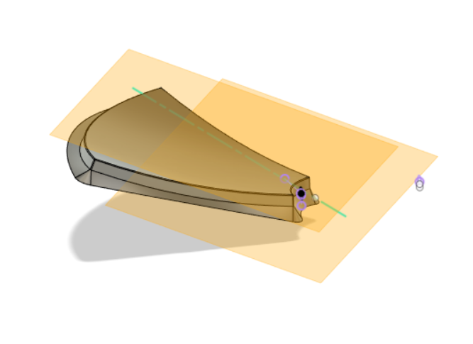

### Week 11
##### _Monday, November 14_
We went back to Fusion360 and worked on the CAD model for that would be the mold for thermo-forming the reflector pieces. We had to shell the bottom of the piece and add supports to aid in the thermo-forming process. Thermo-forming doesn't like edges, so we also ensured that the final part would have smooth transitions between the sides of the supports.
Here is the final mold for each of the 6 reflector pieces:

##### _Wednesday, November 16_
With the mold done, we discussed toolpaths for milling. Justin showed us his way of creating the tool paths in Fusion360. Then, we brainstormed ideas for the secondary mirror. Justin explained the numerical system used for threaded rods and told us that quarter-inch 20 rods would probably be best for the supports on the bounce mirror.
[Head back to the home page](../index.html).